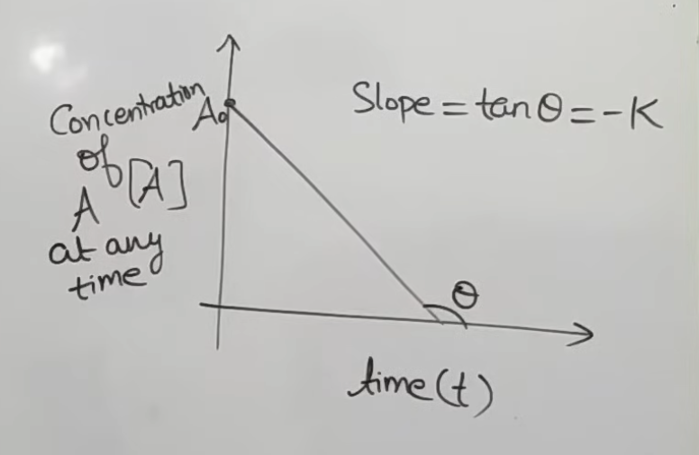

CHEMICAL KINETICS : ZERO ORDER KINETICS | RATE LAW AND HALF LIFE OF ZERO
ORDERYOUTUBE PLAYLIST LINK
Introduction - Rate of Reaction
Factors Affecting Rate of Reaction - 7 Factors
Rate Law and Order Of Reaction
Initial Rate Method to Determine Order of Reaction & Rate Law
ZERO Order Kinetics | Rate Law and Half Life Of Zero Order
FIRST Order Kinetics | Complete First Order Reaction
Second, Third & nth Order Reaction & Kinetics - All Formulae
How to Determine Order of Reaction? Half Life Method & Other Methods
Molecularity of Reaction | Pseudo Order Reaction | Molecularity
Arrhenius Equation | Effect of Temperature on Rate of Reaction
Complex Reaction - Mechanism of Reaction - Steady State
Approximation
Parallel First Order Reaction Kinetics
ZERO ORDER KINETICS | RATE LAW AND HALF LIFE OF ZERO ORDER
Zero-order reaction: definition & key idea Integrated rate law: \( A = A_0 - kt \)
Graph: \([A]\) vs \(t\) (straight line), slope & intercept
Half-life and life time in zero order
Equal concentration drops take equal time (unitary idea)
Practice: time for 75% completion given 50% time
Practice: time for 33.33% completion (two methods)
Order identification by hit-and-trial using \(k\) consistency
All key graphs for zero order (rate, concentration, half-life)
Product formation: \([B]\) vs \(t\) for \(A \to B\)
Examples where zero order appears (photochemical, enzyme,
surface)
Special case: \(3A \to\) products (stoichiometric factor)
Special case: \(\frac{5}{2}A \to\) products (quick results)
Two-reactant case: \(A + 2B \to\) products (setup)
General idea: reactant \(A\) converts to products.
Rate is independent of reactant concentration \([A]\).
\([A]\) decreases with time, but rate remains constant (for
fixed temperature/conditions).
Common misconception: “\([A]\) constant” is false; only the rate
stays constant.
For \(A \rightarrow\) products and zero order:
Rate in terms of reactant consumption (stoichiometric
coefficient \(=1\)):
Equate:
Rearrange and integrate with limits: at \(t=0,\ [A]=[A]_0\); at
\(t=t,\ [A]=[A]_t\).
Result (integrated rate law):
Meaning of symbols:
\([A]_0\): initial concentration
\([A]_t\): concentration remaining at time \(t\)
\(k\): rate constant (zero order)
From \([A]_t = [A]_0 - kt\), compare with \(y = mx + c\):
\(y \equiv [A]_t\)
\(x \equiv t\)
Slope \(m = -k\)
Intercept \(c = [A]_0\)

Interpretation:
\([A]\) decreases linearly with time.
At the time when the line hits \([A]=0\), reaction is
complete (for this simple case).
Exam cue: if \([A]\) vs \(t\) is a straight line with negative
slope \(\Rightarrow\) zero-order reaction.
Using angle form (if graph gives an angle \(\theta\)):
Half-life \(t_{1/2}\): time for 50% completion.
Use \([A]_t = [A]_0 - kt\):
Life time \(t_{\text{lf}}\): time for 100% completion (in this
simple \(A \to\) products case).
Key dependence (zero order):
\(t_{1/2}\) depends on initial concentration \([A]_0\).
This is unlike first order, where half-life is independent
of \([A]_0\).
For zero order, \([A]\) decreases linearly with time.
Example pattern (conceptual):
If \([A]\) goes \(100 \to 90\) in time \(t\), then \(90 \to
80\) also takes time \(t\), and so on.
If 10% completion takes time \(t\), then 80% completion
takes \(8t\).
Quick rule: completion percentage converts to remaining \([A]\),
then use linearity or \([A]_t = [A]_0 - kt\).
Given: zero-order \(A \to\) products, time for 50% completion
\(=2\) min.
Set \([A]_0 = 100\) (any convenient value).
At 50% completion: \([A]=50\), \(t=2\) min.
Use \(t = \dfrac{[A]_0 - [A]}{k}\): \(2 = \dfrac{100-50}{k}
= \dfrac{50}{k}\).
For 75% completion: remaining \([A]=25\).
\(t = \dfrac{100-25}{k} = \dfrac{75}{k}\).
Divide: \(\dfrac{t}{2} = \dfrac{75/k}{50/k} = \dfrac{75}{50}
= \dfrac{3}{2}\).
\(t = 3\) min.
Unitary shortcut (concept): 50 drop (100 to 50) takes 2 min, so
25 drop (50 to 25) takes 1 min; total \(=3\) min.
Question 1
Answer: 3 min.
Given: time for 50% completion \(=2\) min.
Use \([A]_0=100\):
50% completion \(\Rightarrow [A]=50\): \(2 =
\dfrac{100-50}{k}=\dfrac{50}{k}\).
33.33% completion \(\Rightarrow [A]=66.66\): \(t =
\dfrac{100-66.66}{k}=\dfrac{33.33}{k}\).
Divide: \(\dfrac{t}{2}=\dfrac{33.33}{50}\Rightarrow t
\approx 1.333\) min.
Unitary idea (approx): 50 drop takes 2 min, so 10 drop takes
\(2/50 \times 10 = 0.4\) min; then scale linearly for required
drop.
Question 2
Answer: \(\approx 1.333\) min.
Some problems give times for two different % completions and ask
order.
Practical “hit-and-trial” method:
Assume an order (often start with first order in many
exams), compute \(k\) from each data point.
If \(k\) values are same (or nearly same within experimental
error), the assumed order is consistent.
If not, try another order (zero order, then second order,
etc.).
In zero order, proportional time pattern may appear: if 20%
takes 40 min and 40% takes 80 min, it strongly suggests zero
order.
Using zero-order equation for each data point:
Unit of \(k\) for zero order:
Core graphs for zero order (for \(A \to\) products type):
Rate vs \([A]\): horizontal line (rate constant, independent
of \([A]\)).
Rate vs \(t\): horizontal line (rate constant with time,
under fixed conditions).
\([A]\) vs \(t\): straight line with slope \(-k\), intercept
\([A]_0\).
Half-life dependence:
If graph gives an angle \(\theta\) for \(t_{1/2}\) vs \([A]_0\):
Consider \(A \rightarrow B\) (product \(B\)).
Let after time \(t\), \([A] = [A]_0 - x\), then \([B] = x\)
(stoichiometric 1:1).
Use zero-order integrated law for \(A\):
Substitute \([A] = [A]_0 - x\):
Therefore, product concentration:
Graph: \([B]\) vs \(t\) is a straight line through origin with
slope \(k\).
Photochemical example (experimentally shows zero order in
reactants):
Observed form discussed: \( r \propto
[\mathrm{H_2}]^0[\mathrm{Cl_2}]^0 \) (under the described
photochemical conditions).
Rate can depend on light intensity (photon flux) rather than
reactant concentrations in such cases.
Other contexts mentioned:
Enzyme-catalyzed reactions (often show saturation-type
behavior leading to zero-order region).
Gas dissociation on solid surfaces at high pressure (surface
saturation).
Example cited for surface process:
(conditions/details unclear in transcript)
Special case: reaction is \(3A \rightarrow\) products, but rate
law is still zero order:
Rate in terms of \(A\) with stoichiometric coefficient 3:
Equate:
Integrate with \([A]=[A]_0\) at \(t=0\):
Shortcut idea:
For reactant \(A\), effective constant becomes \(k_A = 3k\)
(multiply by stoichiometric coefficient of \(A\)).
Then use the same zero-order forms with \(k \to k_A\).
Half-life for \(3A \to\) products:
Reaction: \(\dfrac{5}{2}A \rightarrow\) products, with
zero-order rate:
Rate relation:
Integrated form:
Half-life:
Reaction: \(A + 2B \rightarrow\) products with zero-order rate:
Reactant-specific consumption relations:
\(r = -\dfrac{1}{1}\dfrac{d[A]}{dt} =
-\dfrac{d[A]}{dt}\Rightarrow \dfrac{d[A]}{dt} = -k\)
\(r = -\dfrac{1}{2}\dfrac{d[B]}{dt}\Rightarrow
\dfrac{d[B]}{dt} = -2k\)
Integrated (with \([A]=[A]_0,\ [B]=[B]_0\) at \(t=0\)):
\([A]_t = [A]_0 - kt\)
\([B]_t = [B]_0 - 2kt\)
Corresponding half-lives (based on each reactant halving):
For \(A\): \(t_{1/2}(A) = \dfrac{[A]_0}{2k}\)
For \(B\): \(t_{1/2}(B) = \dfrac{[B]_0}{2(2k)} =
\dfrac{[B]_0}{4k}\)
Note: these are “reactant half-lives” defined by each reactant
reaching half of its own initial concentration.